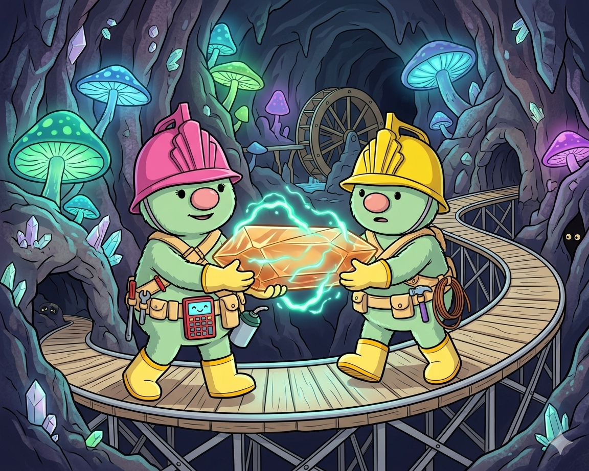
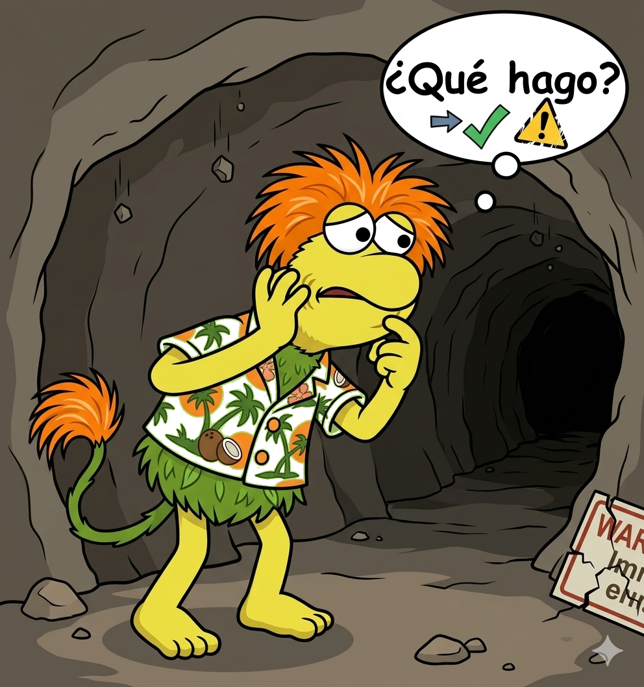
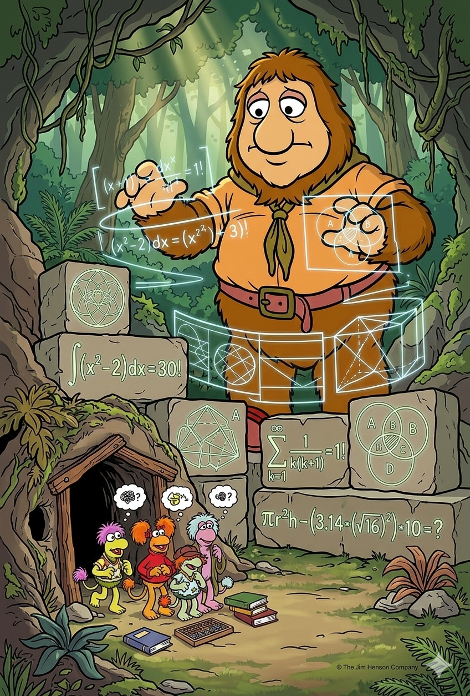
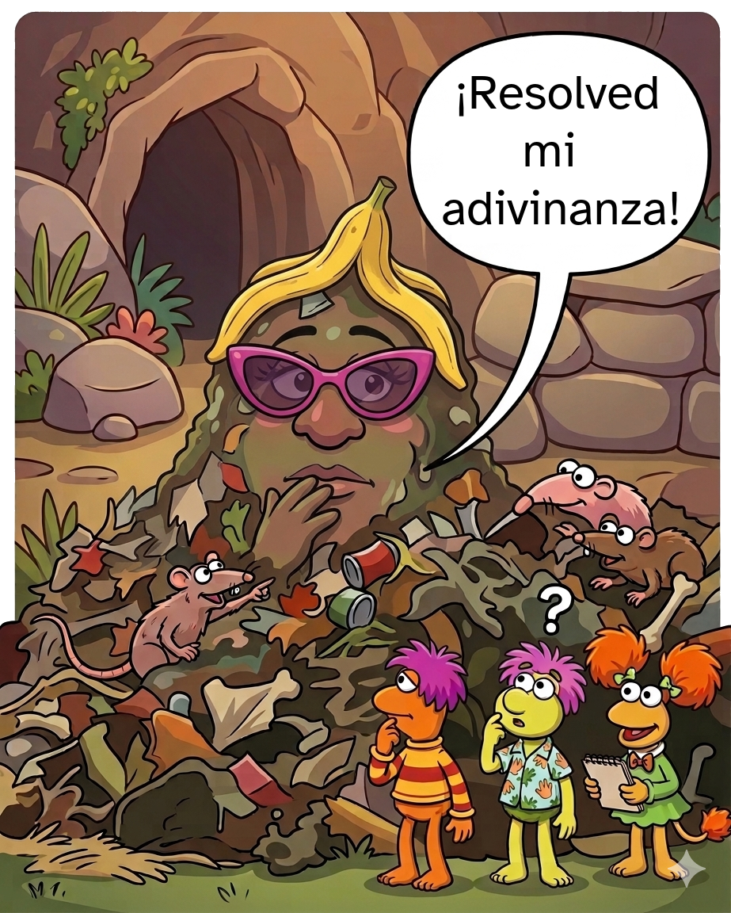
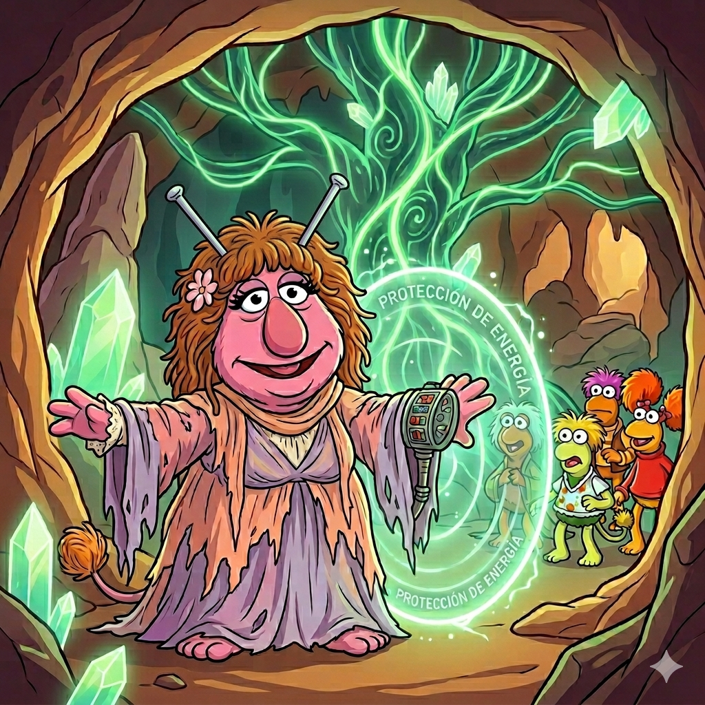
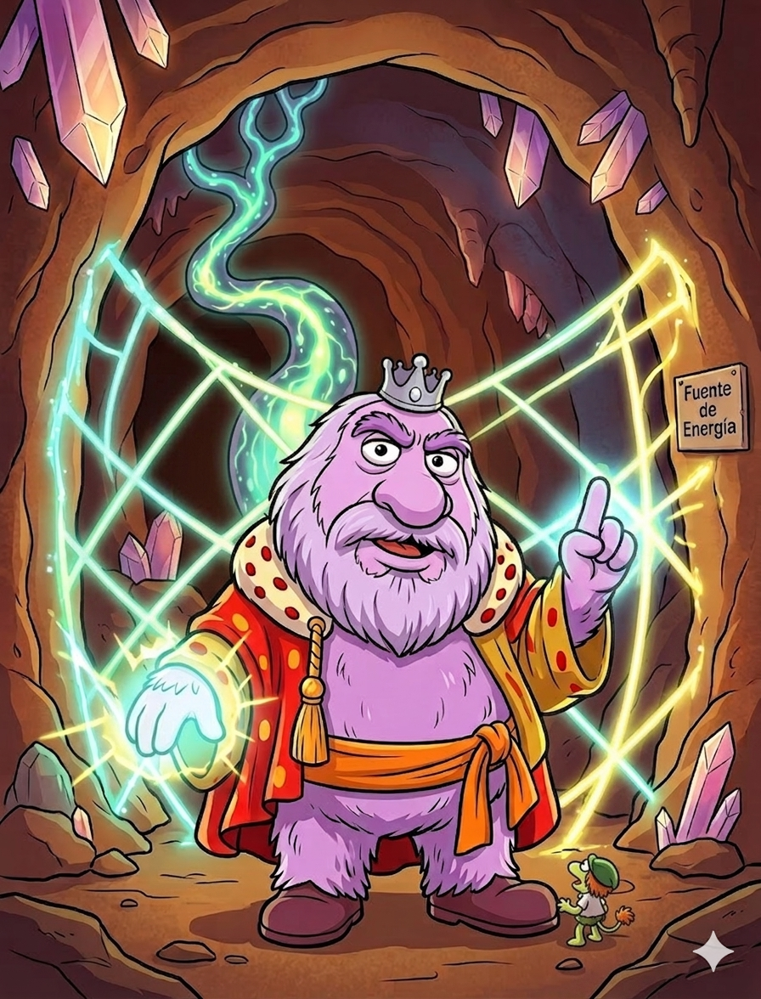

🪨 Los Fraggle Rock y la postal desde el mundo de los enteros 🪨
Los Goris han bloqueado la energía del Risco Fraguel… Pero por suerte ha llegado una postal del tío Matt, que aún desde la distancia se ha enterado del problema. En su postal les habla a los fraggle de un maravilloso mundo con una herramienta matemática que les ayudará a recuperar la energía: LOS NÚMEROS ENTEROS.
Selecciona duración
Modo profesor:
Autor: Joaquín Candañedo.
📜 Postal del Tío Matt
📜 Postal del Tío Matt
Querido Gobo:
Te escribo desde el Mundo Exterior, donde he descubierto algo fascinante:
¡los humanos usan números que pueden ser positivos y negativos!
Estos números se llaman enteros.
Los positivos representan cosas que se tienen (como rábanos 🍠),
y los negativos cosas que se deben o se pierden.
🔹 Suma
Mismo signo → se suman y se mantiene el signo:
\[ (+3) + (+5) = +8 \]
\[ (-4) + (-2) = -6 \]
Distinto signo → se restan y se queda el signo del mayor:
\[ (+7) + (-3) = +4 \]
\[ (-9) + (+5) = -4 \]
🔹 Resta
Restar es lo mismo que sumar el contrario:
\[ 6 - 8 = 6 + (-8) = -2 \]
\[ (-3) - (-5) = -3 + 5 = 2 \]
🔹 Multiplicación y división
Signos iguales → resultado positivo:
\[ (-3)\cdot(-4) = +12 \]
\[ (+12) \div (+3) = +4 \]
Signos distintos → resultado negativo:
\[ (-5)\cdot(+2) = -10 \]
\[ (+15) \div (-3) = -5 \]
🔹 Relación entre operaciones
¡Todo está conectado!
Sumar y restar son operaciones inversas, igual que multiplicar y dividir.
Pero cuidado… los Goris han bloqueado la energía del Risco con acertijos matemáticos 😱.
Solo dominando estos números podréis salvar Fraggle Rock.
Recuerda: equivocarse es parte del aprendizaje.
¡Prueba, cambia de estrategia y sigue!
¡Confío en ti, Gobo!
Tu tío aventurero, Tío Matt
🥕 Prueba 1: Los rábanos de Gobo
Gobo estaba organizando su colección de rábanos 🍠, pero algo ha pasado…
Primero tenía +12 rábanos, luego perdió 7 en un despiste,
y más tarde encontró 5 más explorando una cueva secreta.
👉 ¿Cuántos rábanos tiene ahora?
\[
(+12) - 7 + 5
\]
Recuerda: restar es lo mismo que sumar un número negativo.
🪨 Prueba 2: El pozo de Bombo
Bombo ha caído en un pozo mientras exploraba Fraggle Rock 😱.
Primero desciende hasta -3 metros, pero luego consigue subir 8 metros ayudándose de unas raíces.
👉 ¿Dónde está ahora?
\[
-3 + 8
\]
Si sumas un número positivo, subes en la recta numérica.
🎨 Prueba 3: Musi la artista
Musi está pintando un mural en Fraggle Rock inspirado en los cambios de temperatura 🌡️.
Hoy la temperatura era de 6º, pero de repente ha bajado 10º.
👉 ¿Cuál es la temperatura final?
\[
6 - 10
\]
Recuerda: restar es lo mismo que sumar el número opuesto.
🎶 Prueba 4: El baile de Rosi
Rosi ha creado una coreografía muy extraña en Fraggle Rock 😵💫.
Cada movimiento tiene una “energía” positiva o negativa, y el resultado final depende de cómo se combinan todos los pasos.
En su baile:
Primero realiza un movimiento de energía -3, repetido 4 veces
Después hace otro movimiento de energía -2, repetido 3 veces
Ahora toca combinar todo…
👉 Calcula el resultado final de la coreografía
\[
(-3)\cdot 4 + (-2)\cdot 3
\]
Recuerda usar la regla de los signos.
🛠️ Prueba 5: Los curris desordenados

Los curris están trabajando sin parar transportando energía por Fraggle Rock ⚡.
Pero hoy están un poco desorganizados… y han ido dejando y recogiendo energía sin ningún orden claro 😵💫.
Estos son los cambios de energía que han realizado:
+8 unidades
-3 unidades
-6 unidades
+5 unidades
-4 unidades
+2 unidades
👉 ¿Cuál es la energía total final?
\[
8 - 3 - 6 + 5 - 4 + 2
\]
🧠 Reto extra: Intenta reorganizar los números mentalmente para hacerlo más rápido.
Agrupa primero los positivos por un lado y los negativos por otro.
🤯 Prueba 6: El túnel inestable de Dudo

Dudo, el fraggle más joven, ha encontrado un túnel secreto… pero hay un problema 😰.
Como siempre, no sabe qué camino elegir. Ha probado varios a la vez, sumando y restando energías sin decidirse del todo.
El túnel es inestable y solo se estabilizará si calculas correctamente la energía total de sus decisiones.
Estos han sido sus movimientos:
Avanza con una energía de -2 repetida 5 veces
Luego encuentra una corriente que le da 12 unidades, pero se reparte en grupos de -3
Finalmente pierde 4 unidades más por indecisión
👉 ¿Cuál es la energía final del túnel?
\[
(-2)\cdot 5 + \frac{12}{(-3)} - 4
\]
Recuerda el orden: primero multiplicaciones y divisiones, después sumas y restas.
👑 Prueba 7: Junior Goris se equivoca (otra vez)

Junior Goris está intentando bloquear el paso a los fraggle con un cálculo… pero como siempre, algo no cuadra 😅.
Está convencido de que ha resuelto correctamente la operación y no deja pasar a nadie hasta que alguien le demuestre si tiene razón o no.
Este es su cálculo:
\[
(-6)\cdot(-2) + (-8) = -4
\]
👉 ¿Está bien?
👉 Si no lo está, corrige el resultado.
Primero resuelve la multiplicación y revisa la regla de los signos.
🗑️ Prueba 8: El mensaje secreto de la Montaña de Basura

Los fraggle han acudido a la sabia Montaña de Basura 🗑️,
conocedora de todos los secretos del universo.
Con voz misteriosa, responde a vuestra pregunta con un acertijo:
“Un número multiplicado por -3 da 15…”
Para poder continuar vuestro camino, debéis descubrir qué número es ese. ¡Resolved mi adivinanza!
👉 ¿Cuál es el número?
\[
x \cdot (-3) = 15
\]
Piensa: ¿qué operación deshace una multiplicación?
👑 Prueba 9: El plan oculto de la Reina Goris

La Reina Goris ha diseñado un plan secreto para impedir que los fraggle restauren la energía del Risco 😈.
Su estrategia combina varias acciones encadenadas, cada una con un efecto positivo o negativo sobre la energía total.
Si conseguís descifrar correctamente su plan, podréis anticiparos y neutralizarlo.
Estas son las acciones de su plan:
Reduce la energía en 4 unidades, repetido 3 veces
Después aplica un efecto negativo de -2, repetido 6 veces
Finalmente, lanza un ataque que multiplica 5 unidades negativas por -2
👉 ¿Cuál es el resultado total del plan?
\[
(-4)\cdot 3 + (-2)\cdot(-6) - 5\cdot(-2)
\]
Calcula primero cada multiplicación y luego combina los resultados paso a paso.
🔥 Prueba 10: El desafío final del Rey Goris

Habéis llegado al último reto… 😨
El temible Rey Goris protege la energía del Risco con un desafío final mucho más complejo que los anteriores.
Ha combinado varias operaciones con signos positivos y negativos para confundiros.
Solo quienes sean capaces de resolverlo paso a paso podrán derrotarlo y salvar Fraggle Rock.